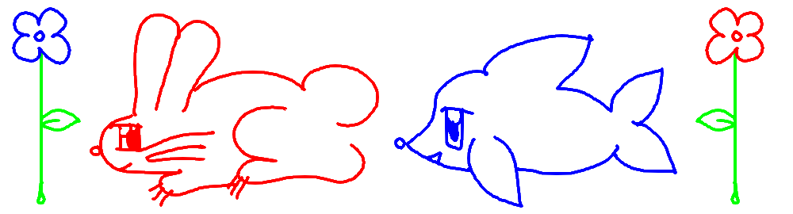

2025.5.29 FIRST POST! SPRING END
this update is foundation for a much bigger update i'll be doing when i finish my VN
i'd like to add more graphics and fixes to the pages over time.. my first goal was simply to get something presentable out first.
i get quite overwhelmed with how deep i want to go with the website
update by update, i'll get there.
i will be using RSS feed for broadcasting updates and changes i feel are note-worthy, and using this page for a more elaborate broadcast, updates i feel peeps who follow my work should know/might want to know..!
finishing this foundation makes it so that i can update things daily or weekly if i'd like, now that i am more comfortable with a web workflow.. if you notice something being rough around the edges, im just taking my time. i'll keep being a web maid periodically.
VISUAL NOVEL PROGRESS UPDATE..
the writing itself is the most finished thing, but every other area still needs work
the most recent milestone was tightening the writing/pyscript in the first three chapters up
development is active, but not exactly fast due to my disability..
its been hard to work around that, but it is what it is.
all that really matters is that i'm trying to make it happen and whats left to do is less every month
the fourth chapter still needs a lot of love though, unlike the other three chapters i only finished writing it & adding it to the game early this year.. the pyscript is the roughest in chapter 4, and i can't predict how long it'll take me to tighten it up.. it is such a big chapter, with so much going on... sigh.
journey, not destination.. i try to feel that even though im kind of in a purgatory until i finish
as for little updates and a deeper talk about what i'm doing, i put posts on patreon.. so if ya want that
BACK // RSS